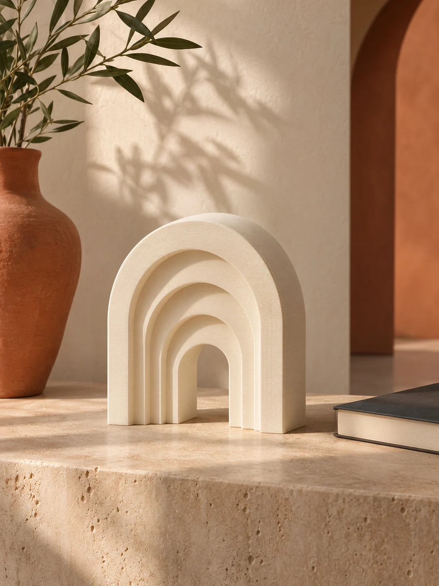
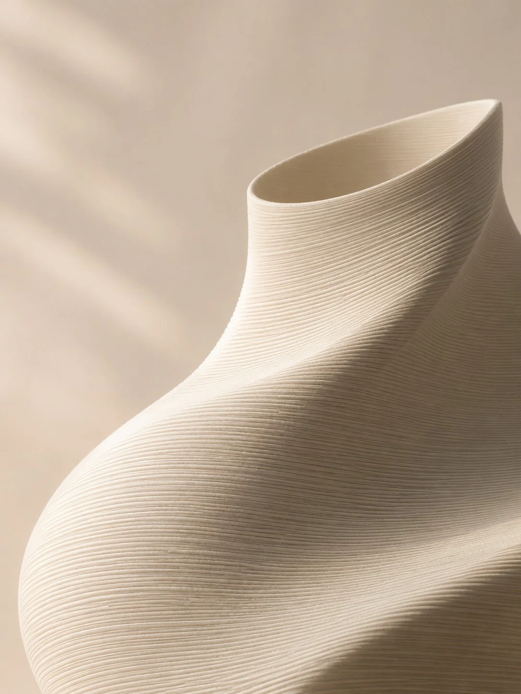
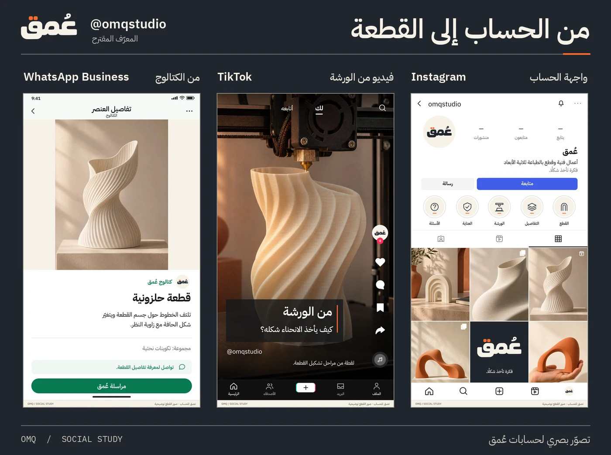
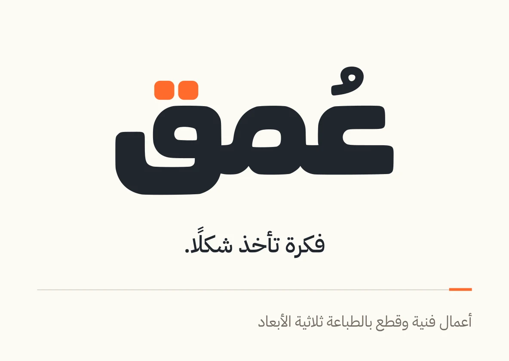
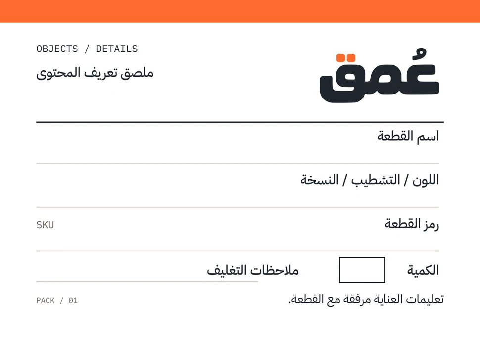
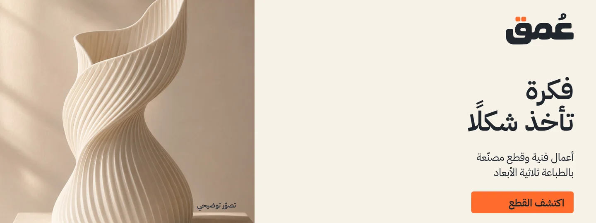

اترك حول حدود الحروف مساحة خالية تعادل عرض نقطة من القاف على الأقل.
مرجع الاستوديو / BRAND MANUAL
دليل الهوية.
نوقّع كل قطعة بكلمة واحدة. هنا تجد رسم «عُمق»، والألوان والصور التي ترافقه من شاشة المتجر إلى البطاقة داخل الصندوق.
تنزيل ملفات الهوية
01 / SIGNATURE
التوقيع الكتابي
تصل الميم بين العين والقاف في رسم مدمج. الضمّة جزء من الاسم، وتحمل نقطتا القاف اللمسة البرتقالية الوحيدة في الشعار.
عرض مبدئي للحبر المرئي على الشاشة وفي الطباعة. افحص الضمّة والنقطتين على العينة الفعلية.
استخدم المسارات الأصلية دون تمديد. اختر النسخة التي تناسب الخامة.


02 / COLOR & TYPE
اللون والخط
الجرافيت يضبط القراءة، والعاجي يترك مساحة للقطعة. يظهر البرتقالي في موضع صغير مقصود، مثل نقطتي القاف أو زرّ الإجراء.
01
الجرافيتللحروف والنص
02
العاجيللخلفيات والمساحة
03
برتقالي التشكيلللنقطتين والتفاصيل
عيّنة حروف / IBM PLEX
من الخطّ إلى الكتلة.
Form, surface & light.
تراتُب مقروء
نستخدم IBM Plex Sans Arabic للعناوين والنص العربي، وIBM Plex Sans للاتينية. يكفي وزن شبه عريض للعنوان وعادي للوصف. نُبقي كلمة «عُمق» المرسومة مستقلة عن الخطّ الطباعي.
03 / IMAGE & VOICE
ما نُريه، وما نقوله
تبدأ الصورة بهيئة القطعة، ثم تقترب من ملمسها. تصف الجملة الأولى ما تراه العين؛ وتأتي الخامة والأبعاد والعناية من بيانات القطعة الفعلية.


مثال لوصف قطعة
«من الجانب، يظهر الفراغ بين انحناءتَي القطعة.»
جملة قصيرة، وملاحظة يمكن رؤيتها.
الصور هنا توضيحية لاتجاه التصوير.
توقيع الاستوديو / IN MOTION
الشعار في حركة
يظهر جسم الكلمة باتجاه القراءة العربية، ثم تستقرّ الضمّة ونقطتا القاف. تنتهي اللقطة بالتوقيع نفسه الذي يظهر على البطاقة.
4K UHD30 FPS٤ ثوانٍ · بلا صوت
حزمة الحركة والنسخ الشفافة ZIP ↓
04 / APPLICATIONS
من الشاشة إلى الطرد
على الحساب يتعرّف الزائر إلى القطعة. في المعرض يكتشف شكلها، وعلى البطاقة يجد اسمها ومعلومات العناية بها.

الحسابات والمحتوى
شعار ثابت مع طريقة عرض تناسب كل منصة.
تنزيل نماذج المنصات ZIP ↓تصفّح المنصات الـ١٢


التغليف والعناية
من ملصق الصندوق إلى بطاقة تحمل اسم القطعة.
تنزيل قوالب الهوية ZIP ↓
واجهة المتجر
معاينة غلاف سلة؛ تقدّم القطعة قبل بياناتها.
استكشاف المعرض05 / RESOURCES
مكتبة التنزيلات
اختر الأصل المناسب لمهمتك. للدراسة والمراجعة افتح الدليل، وللتصميم والطباعة اختر الحزمة الكاملة بملفاتها القابلة للتعديل.